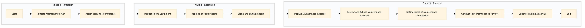

| Role | Steps |
|---|---|
| Facilities Manager | 1.1 1.2 3.1 3.2 3.4 3.5 |
| Housekeeping Technician | 2.1 2.2 2.3 |
| Front Desk Agent | 3.3 |
| Step | Name | Role | System | Input | Output | KPI | Dec? | Exc? | Pain Point / Risk |
|---|---|---|---|---|---|---|---|---|---|
| 1.1 | Initiate Maintenance Plan | Facilities Manager | Oracle OPERA Cloud | Maintenance schedule | Updated maintenance plan | Less than 30 min | N | Y | Overlooking critical maintenance tasks |
| 1.2 | Assign Tasks to Technicians | Facilities Manager | Oracle OPERA Cloud, IBM Maximo | Updated maintenance plan | Task assignments | Less than 5 min | N | Y | Inefficient task distribution |
| 2.1 | Inspect Room Equipment | Housekeeping Technician | Oracle OPERA Cloud | Task assignments | Inspection report | Less than 15 min per room | N | Y | Overlooking minor issues |
| 2.2 | Replace or Repair Items | Housekeeping Technician | Oracle OPERA Cloud, Birchstreet Procurement | Inspection report | Maintenance log | Less than 30 min per item | N | Y | Delayed procurement of replacement parts |
| 2.3 | Clean and Sanitize Room | Housekeeping Technician | Oracle OPERA Cloud | Maintenance log | Cleaning report | Less than 45 min per room | N | Y | Inadequate cleaning protocols |
| 3.1 | Update Maintenance Records | Facilities Manager | Oracle OPERA Cloud, IBM Maximo | Cleaning report | Updated maintenance records | Less than 10 min per room | N | Y | Manual data entry errors |
| 3.2 | Review and Adjust Maintenance Schedule | Facilities Manager | Oracle OPERA Cloud | Updated maintenance records | Adjusted maintenance schedule | Less than 15 min | N | Y | Inflexible scheduling |
| 3.3 | Notify Guest of Maintenance Completion | Front Desk Agent | Oracle OPERA Cloud, Book4Time | Adjusted maintenance schedule | Notification sent to guest | Less than 5 min per notification | N | Y | Delayed communication |
| 3.4 | Conduct Post-Maintenance Review | Facilities Manager | Oracle OPERA Cloud, IBM Maximo | Notification sent to guest | Post-maintenance review report | Less than 30 min | N | Y | Lack of follow-up |
| 3.5 | Update Training Materials | Facilities Manager | Oracle OPERA Cloud, IBM Maximo | Post-maintenance review report | Updated training materials | Less than 1 hour | N | Y | Outdated training content |
This process outlines the steps for conducting guest room preventive maintenance at a full-service Marriott hotel using Oracle OPERA Cloud PMS and other relevant systems.